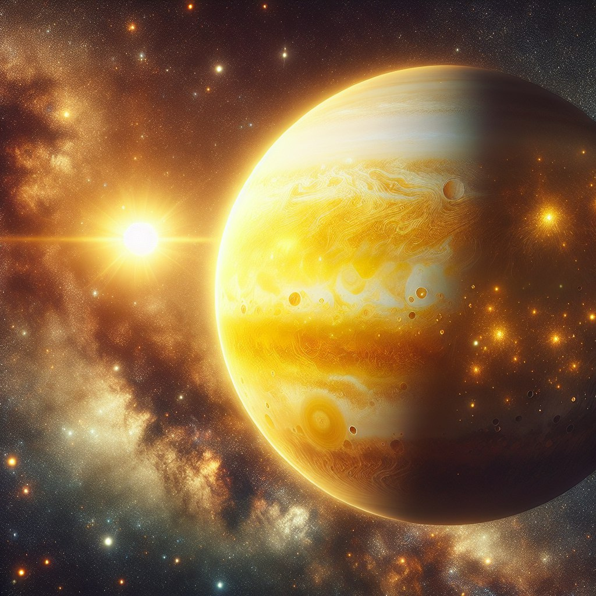
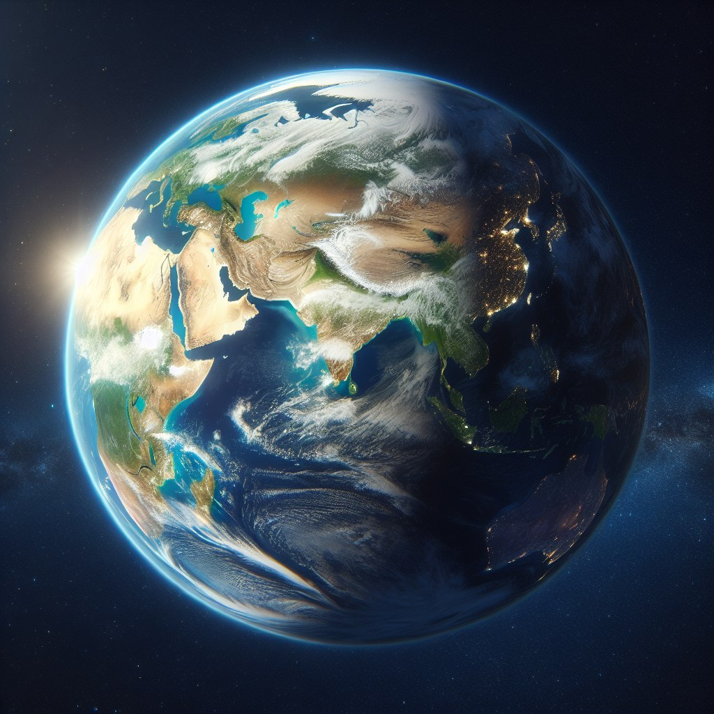
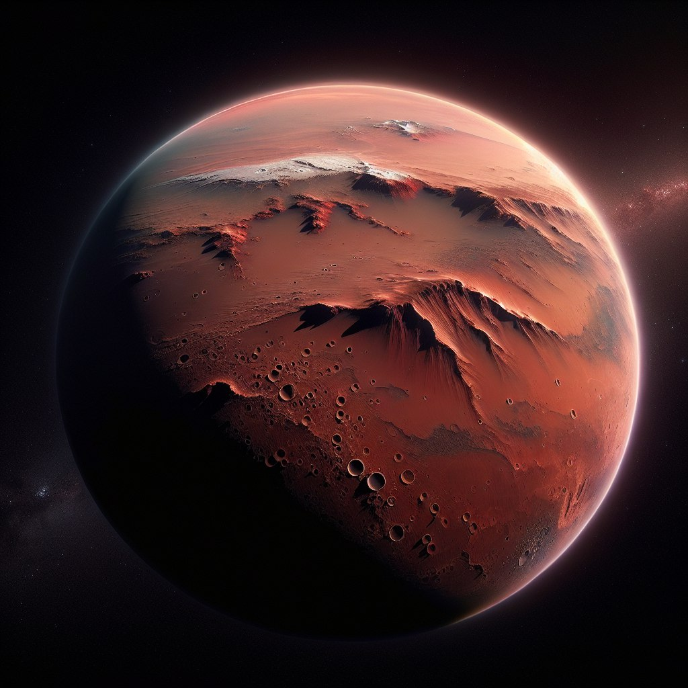
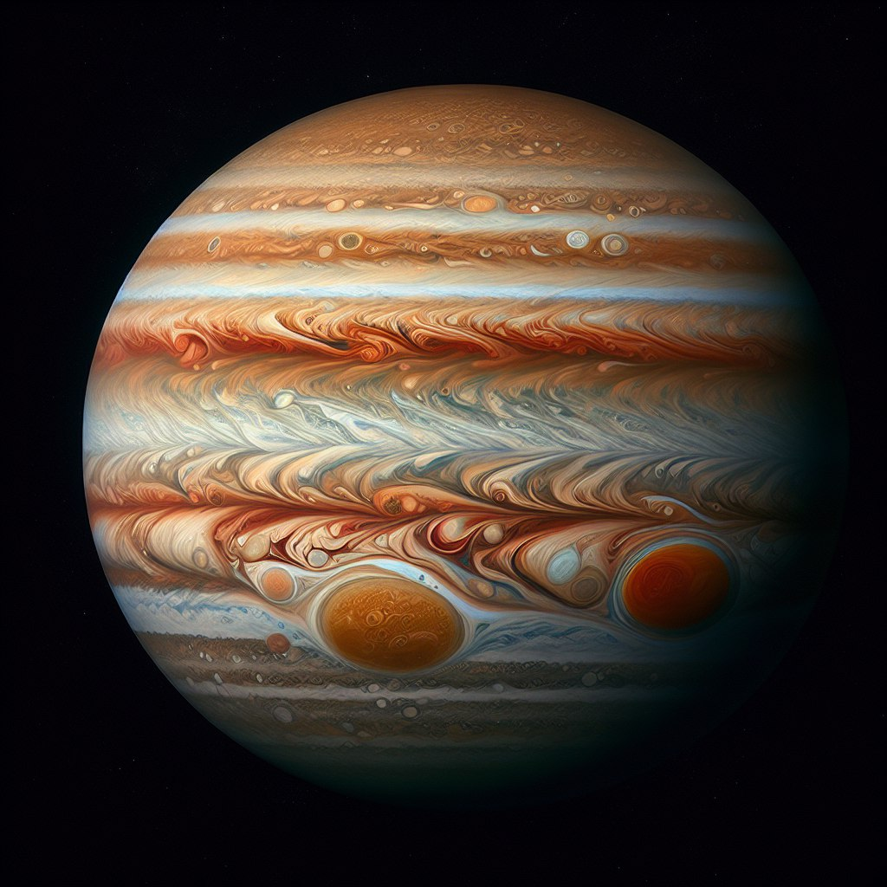
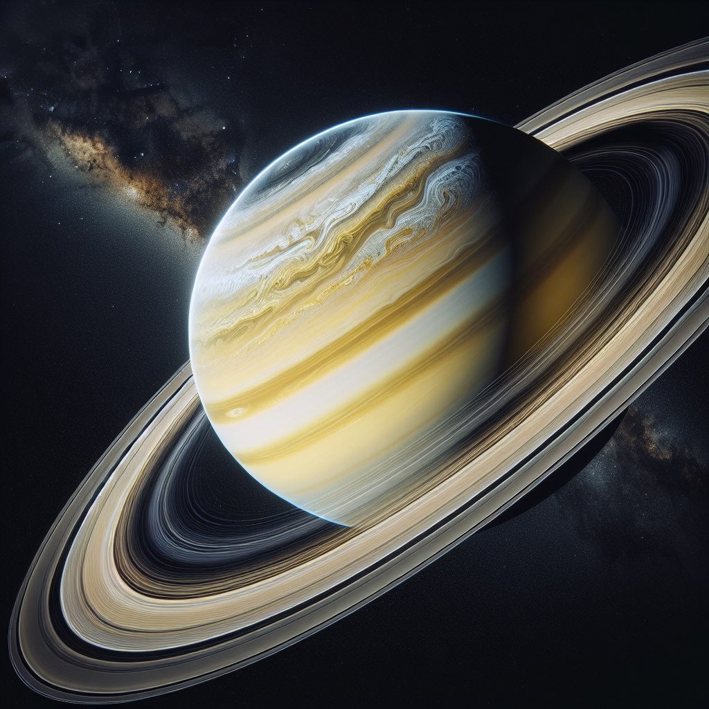
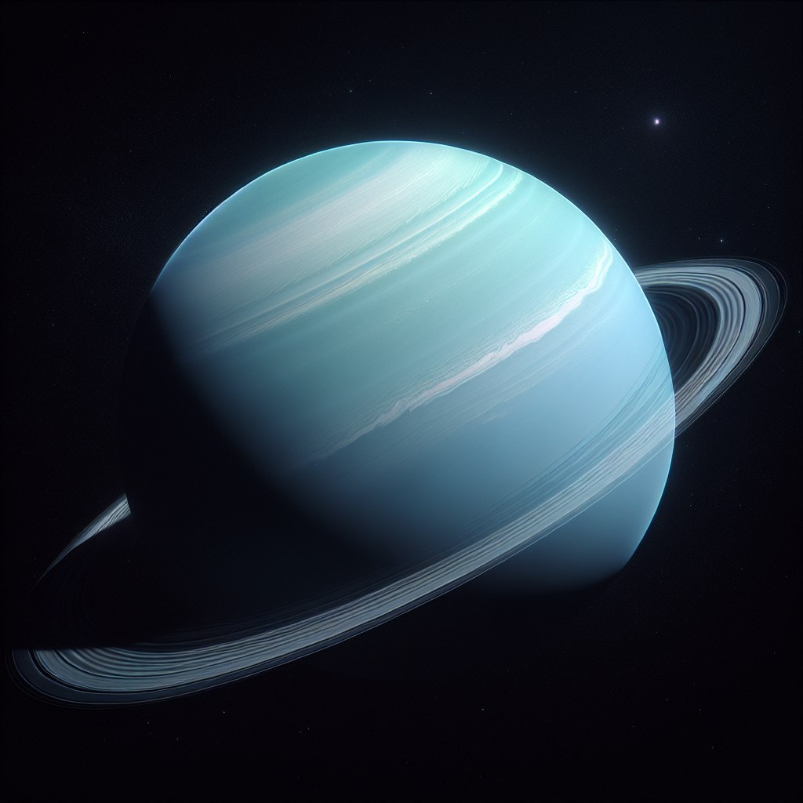
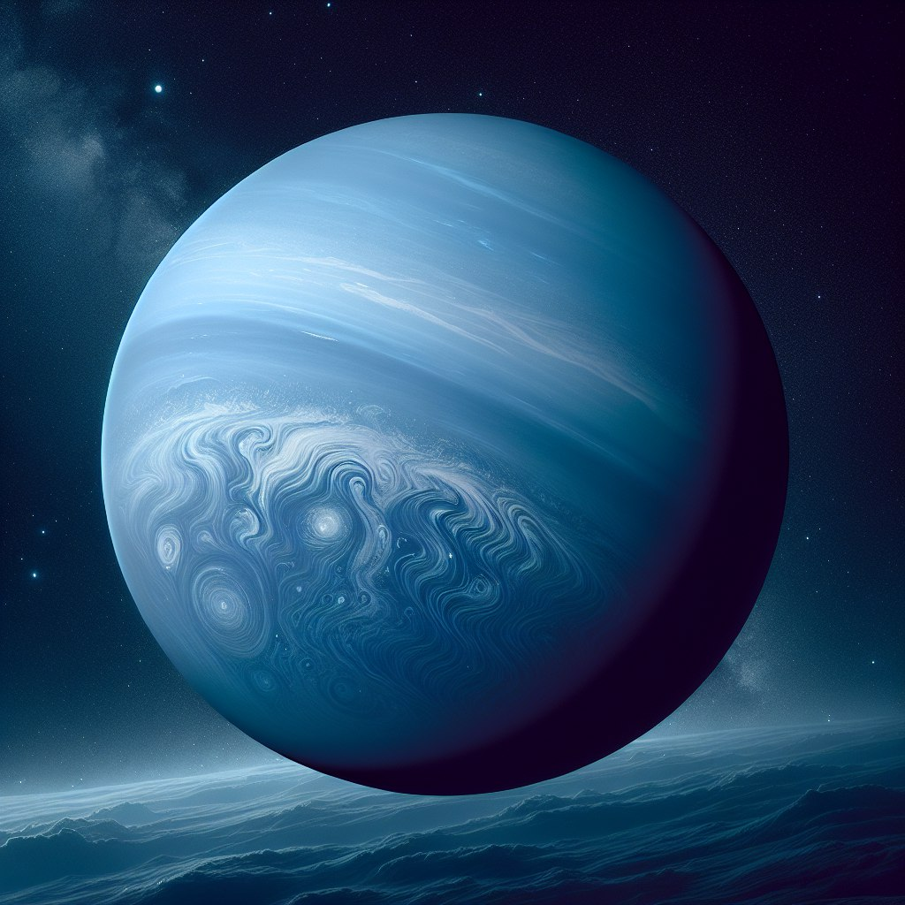

Меркурий, ближайшая планета на солнце, также самая маленькая в нашей солнечной системе. Именован в честь римского бога торговли, это наземная планета, как Земля. Несмотря на его небольшой размер, Меркурий может похвастаться гравитацией, похожим на Марс. Примечательно, что это самая быстрая планета, завершая орбиту вокруг солнца всего в 88 днях земли. Эта быстрая орбита выравнивает с его тезкой, быстремым римским посланником Богом. Экстремальные температуры Меркурия и поверхность кратерной поверхности делают это миром
Венера, вторая планета от Солнца, похожа на Землю по массе и размеру, за что получила титул «сестринской планеты» Земли. Имеет самую плотную атмосферу среди планет земной группы, состоящую в основном из углекислого газа с толстым слоем облаков серной кислоты. Один из самых интересных фактов о Венере заключается в том, что один день на ней (время, необходимое для совершения одного оборота) длиннее, чем венерианский год (время, необходимое для обращения вокруг Солнца). Это медленное вращение способствует экстремальным температурам поверхности и атмосферному давлению, что делает эту среду сложной для исследования.
Земля, третья планета от Солнца, является единственным известным небесным телом, на котором поддерживается жизнь благодаря обилию жидкой поверхностной воды. Глобальный океан Земли, занимающий 70,8% поверхности планеты, является уникальной особенностью нашей Солнечной системы. Форма Земли не является идеальной сферой; он слегка сплющен на полюсах и выпуклый на экваторе. Внутренняя часть планеты динамична: она имеет твердое внутреннее ядро, жидкое внешнее ядро и мантию, которая управляет тектоникой плит, формируя поверхность и создавая защитное магнитное поле.
Марс, известный как Красная планета из-за его поверхности, богатой оксидами железа, является четвертой планетой от Солнца и частым объектом изучения и восхищения. Здесь находится самый высокий вулкан в Солнечной системе — гора Олимп и самый длинный и глубокий каньон — Валлес Маринерис. У Марса есть два маленьких спутника — Фобос и Деймос, а сутки на Марсе лишь немного длиннее земных суток — 24 часа 37 минут. Тонкая атмосфера планеты и сезонные погодные условия, включая пыльные бури, делают ее похожей на Землю, но при этом отличной от нее. Исследование Марса продолжается, его поверхность исследуют такие марсоходы, как Perseverance и Curiosity.
Юпитер, пятая планета от Солнца, является самой большой в нашей Солнечной системе. Газовый гигант, его масса более чем в два с половиной раза превышает массу всех остальных планет вместе взятых. Несмотря на свои размеры, Юпитер имеет быстрое вращение, совершая один оборот чуть менее чем за 10 часов, что вызывает заметное уплощение на полюсах. Эта колоссальная планета известна своим Большим Красным Пятном — гигантским штормом, размером больше Земли, который бушевал на протяжении веков. Сильное магнитное поле Юпитера и многочисленные спутники, в том числе четыре больших галилеевых спутника, открытых Галилеем, делают его увлекательным предметом изучения.
Сатурн, шестая планета от Солнца, известна своей потрясающей системой колец, самой обширной и выдающейся в Солнечной системе. Хотя это не единственная планета с кольцами, ни одна из них не является столь впечатляющей и сложной, как у Сатурна. Средний радиус этого газового гиганта примерно в девять раз больше, чем у Земли, но при этом он имеет низкую плотность — настолько низкую, что он мог бы плавать, если бы его поместили в достаточно большой водоем. Масса Сатурна более чем в 95 раз превышает массу Земли, и у него есть большое семейство спутников, включая Титан, второй по величине спутник Солнечной системы, обладающий плотной атмосферой и озерами жидких углеводородов.
Уран, седьмая планета от Солнца, представляет собой уникальный ледяной гигант поразительного голубого оттенка. В его состав в основном входят вода, аммиак и метан в сверхкритическом состоянии, которые в астрономии часто называют «льдами». Уран окружен 13 слабыми кольцами и по меньшей мере 27 известными спутниками. Одним из наиболее необычных аспектов Урана является его крайний наклон оси, который почти параллелен его орбите, что приводит к резким сезонным колебаниям. Это также одна из самых холодных планет, минимальная температура атмосферы которой опускается до -224 градусов по Цельсию. Ветры на Уране могут достигать скорости до 900 километров в час, что делает его миром экстремальных и захватывающих погодных условий.
Нептун — восьмая и самая далекая известная планета от Солнца. Он является четвертой по диаметру и третьей по массе планетой в Солнечной системе, а также самой плотной среди гигантских планет. Нептун в 17 раз тяжелее Земли и немного тяжелее своего "собрата" — ледяного гиганта Урана. Большая часть (80% или более) массы планеты состоит из горячей плотной жидкости. Нептун известен своими сильными ветрами, которые являются самыми быстрыми в Солнечной системе, достигая скоростей ветра более 2000 км/ч.